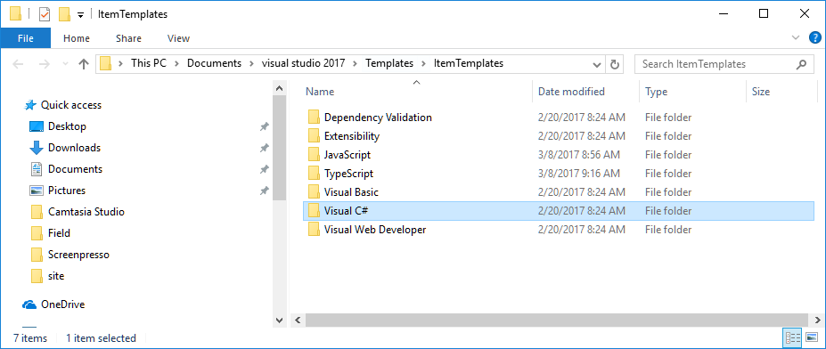

Note
: If you can install Visual Studio extensions, use the extension instead of following this manual instructions. Download the extension here After installing the extension, open Visual Studio and under the Tools menu, select "Tuneup Visual Studio" and click OK
Visual Studio Templates
Download the latest templates-and-snippets.zip from Here.
1 - Placing the Templates folder
In Visual Studio:
- Open the "Tools\Options" menu

- Select "Project and Solutions"
- Copy the path under "User item templates location" and open it in your file explorer

- Open the "Visual C#" folder
 - Place the Templates folder from the downloaded zip file, in this directory

2 - Placing the Shortcuts folder
You can place the shortcuts folder anywhere on your local machine - you'll just need to tell Visual Studio where to find it.
- Goto the "Tools\Code Snippets Manager..." Menu

- In the Language Combo select "csharp"
- Click the Add... button
- Select the "Shortcuts" folder that you've downloaded

Other important settings that improve the performance and experience in Visual Studio
The following settings are in the "Tools\Options" menu
1 set "Automatically Populate Toolbox" to False
In the "Windows Forms Designer" tab
 Improves performance after each build
Improves performance after each build
2 - "Debugging" Tab
2.1 - Uncheck "Warn if no user code on launch (Managed only)"
 Eliminates the "Symbols for the module 'ENV.dll' were not loaded" message you get every time you run the code
Eliminates the "Symbols for the module 'ENV.dll' were not loaded" message you get every time you run the code

2.2 - Uncheck "Enable Edit and Continue"
 Allows you to edit your code, while the application is running
Allows you to edit your code, while the application is running
Help us improve, Edit this page on GitHub
or email us at info@fireflymigration.com